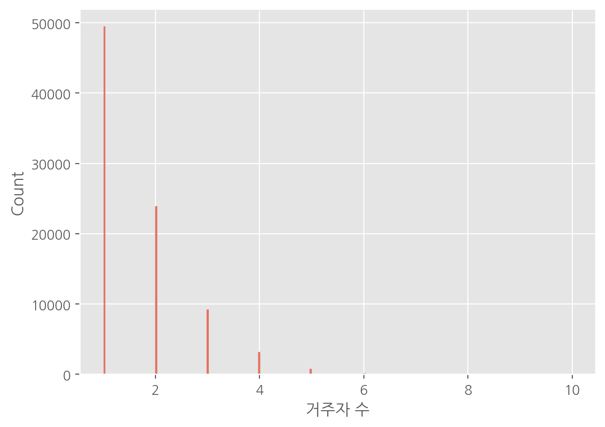
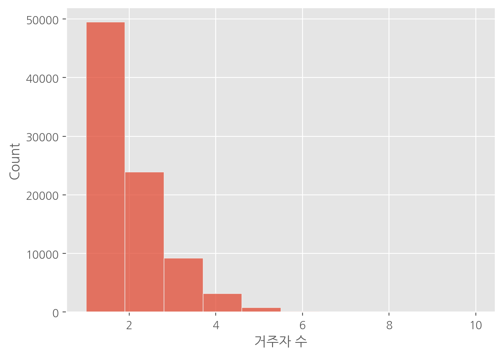
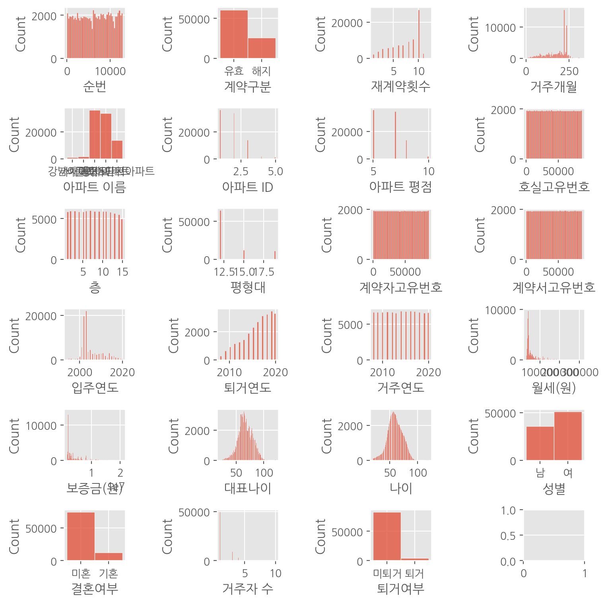
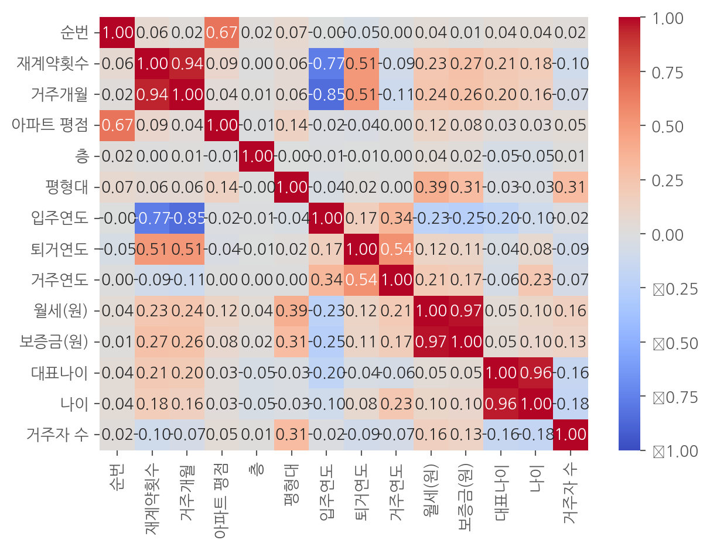
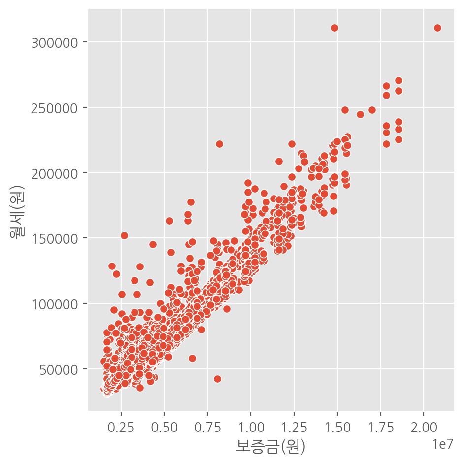
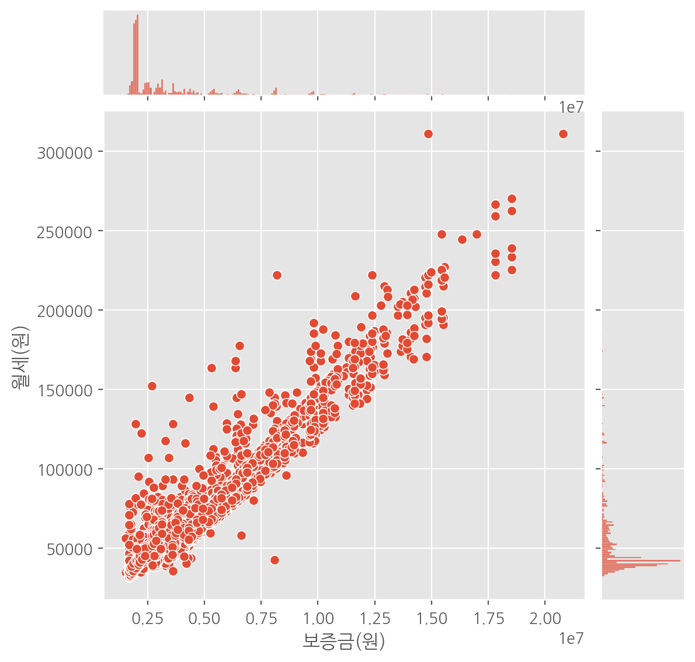
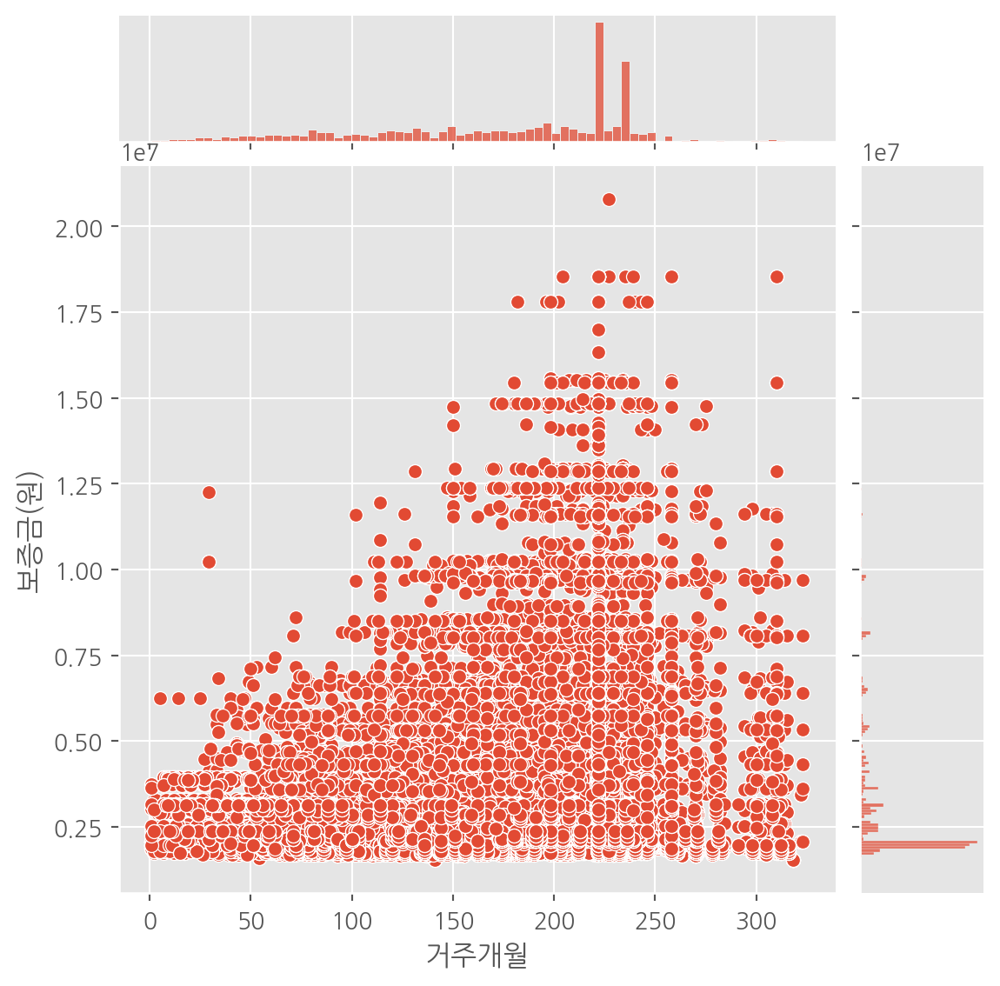
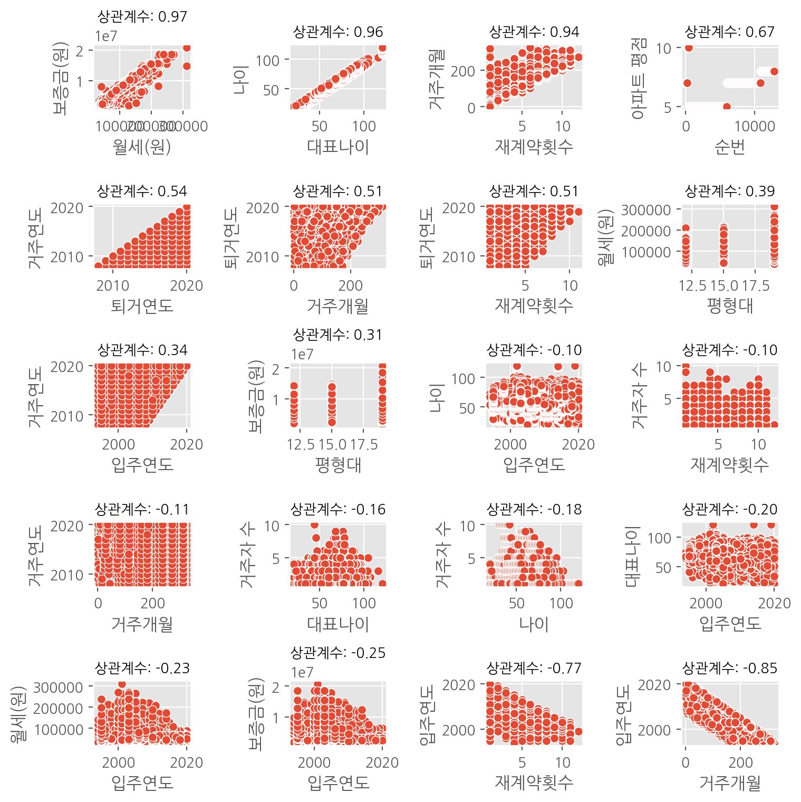
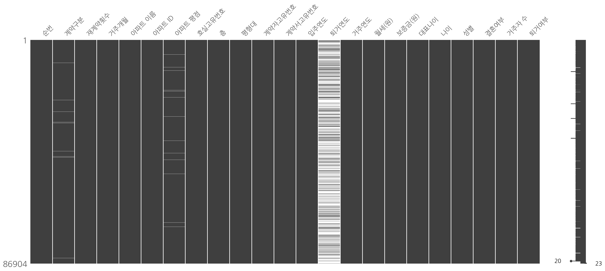

import pandas as pd
data = pd.read_csv("https://raw.githubusercontent.com/Datamanim/datarepo/main/adp/29/p1.csv", encoding="cp949")
print(data.shape)(86904, 23)탐색적 데이터 분석(EDA)은 데이터 세트를 주의 깊게 조사하고, 그 안에서 패턴, 이상치, 기본 구조를 탐색하여 데이터의 특성과 내재된 관계를 이해하는 과정입니다. EDA는 통계적 그래픽과 요약 통계를 활용해 데이터를 시각적으로 검토하는 것을 포함하며, 데이터 과학 프로젝트의 초기 단계에서 매우 중요한 역할을 합니다.
탐색적 데이터 분석은 데이터 과학자와 분석가가 데이터를 깊이 이해하고, 효과적인 분석 전략을 수립하며, 데이터 기반 의사 결정을 내리는 데 있어 핵심적인 과정입니다. EDA는 데이터의 질적인 면모를 파악하고, 분석 준비 과정에서 발생할 수 있는 문제를 사전에 식별하며 해결책을 모색하는 데 도움을 줍니다. 따라서, 모든 데이터 분석 프로젝트에서 EDA에 충분한 시간과 노력을 투자하는 것이 중요합니다.

데이터 이해: 데이터의 분포, 중심 경향성, 변이도 등을 파악함으로써 데이터 분석 전략을 수립하는 데 필수적입니다. 예를 들어, 시애틀 지역의 평균 연봉을 조사할 때, 빌 게이츠와 같은 이상치를 고려하지 않으면 평균값이 실제보다 과대평가될 수 있습니다. 이런 문제를 방지하기 위해 EDA를 통한 데이터의 깊은 이해가 필요합니다.
패턴 및 관계 발견: 데이터 내 숨겨진 패턴과 관계를 발견하는 것은 데이터 기반 의사 결정에 있어 필수적입니다. ‘The Datasaurus Dozen’ 예시처럼, 동일한 통계 요약이라도 데이터 간에 명확한 패턴 차이가 있을 수 있으며, 이는 시각적 탐색 없이는 발견하기 어렵습니다. 이는 EDA가 단순한 요약 통계를 넘어선 깊은 데이터 이해를 가능하게 한다는 것을 보여줍니다.
데이터 정제 및 전처리: EDA를 통해 데이터의 결측치, 극단치, 이상치 등 문제점을 식별하고, 이를 어떻게 처리할지에 대한 전략을 세울 수 있습니다. 이 과정은 데이터 분석의 정확성을 높이고, 품질을 향상시키는 데 필수적입니다.
탐색적 데이터 분석(EDA)에는 정해진 방법은 없으며, 데이터의 특성과 분석 목적에 따라 다양한 접근을 할 수 있습니다. 일반적으로, EDA는 통계적 요약과 데이터 시각화의 두 가지 방법을 중심으로 진행됩니다.
데이터의 기본적인 특성을 파악하기 위해 중앙값, 평균, 최대값, 최소값, 결측치 수와 같은 기본적인 통계값을 확인합니다. 이는 데이터의 전반적인 계량적 특성을 이해하는 데 도움이 됩니다. 또한, 분산, 표준편차, 사분위수 등을 통해 데이터의 분포와 변동성을 평가할 수 있습니다.
데이터 시각화는 EDA의 가장 강력한 도구 중 하나입니다. 복잡한 데이터 세트에서 패턴, 이상치, 관계를 직관적으로 식별 할 수 있습니다.
히스토그램: 데이터의 분포를 이해하는 데 유용하며, 각 데이터 포인트가 속하는 구간의 빈도를 표현합니다. 히스토그램을 통해 데이터의 중심 경향성, 분산, 그리고 이상치의 존재 유무를 빠르게 파악할 수 있습니다. 산포도(Scatter Plot): 두 변수 간의 관계를 시각적으로 표현합니다. 데이터 포인트들이 어떻게 분포하는지, 두 변수 사이에 상관 관계가 있는지를 살펴볼 수 있습니다. 박스 플롯(Box Plot): 데이터의 중앙값, 사분위수, 이상치 등을 시각적으로 표현하는 데 유용합니다. 박스 플롯을 통해 데이터의 분포와 이상치를 한눈에 파악할 수 있습니다. 히트맵(Heatmap): 두 변수 간의 상관관계나, 데이터의 밀도 등을 색상의 강도로 표현합니다. 복잡한 관계나 패턴을 시각적으로 쉽게 이해할 수 있게 합니다.
EDA를 직접 수행하기 위해, 우선적으로 데이터를 불러옵니다. 본 예제에서는 Datamanin에서 공유한 ADP 29회 대구도시공사의 영구임대아파트 입주자 퇴거여부 데이터를 사용합니다. 이 데이터 세트는 고유번호를 가진 계약자와 특정 아파트에 대한 매년 퇴거여부를 기록한 것으로, 주거 정책 분석이나 도시 계획 연구에 유용할 수 있는 정보를 담고 있습니다.
import pandas as pd
data = pd.read_csv("https://raw.githubusercontent.com/Datamanim/datarepo/main/adp/29/p1.csv", encoding="cp949")
print(data.shape)(86904, 23)pandas 라이브러리를 사용하여 데이터를 성공적으로 불러왔으며, 데이터는 총 23개의 컬럼과 86,904개의 레코드로 구성되어 있습니다. 이는 분석 준비 과정에서 데이터의 규모와 구조를 빠르게 파악할 수 있게 합니다.
데이터의 자료형을 파악하는 것은 분석 방향을 설정하고 적절한 데이터 전처리 계획을 수립하는 데 중요합니다. pandas에서 제공하는 info() 메소드를 사용하면 각 컬럼의 데이터 타입과 결측치 여부를 쉽게 확인할 수 있습니다.
data.info()<class 'pandas.core.frame.DataFrame'>
RangeIndex: 86904 entries, 0 to 86903
Data columns (total 23 columns):
# Column Non-Null Count Dtype
--- ------ -------------- -----
0 순번 86904 non-null int64
1 계약구분 86396 non-null object
2 재계약횟수 86904 non-null int64
3 거주개월 86904 non-null int64
4 아파트 이름 86904 non-null object
5 아파트 ID 86904 non-null int64
6 아파트 평점 85679 non-null float64
7 호실고유번호 86904 non-null int64
8 층 86904 non-null int64
9 평형대 86904 non-null int64
10 계약자고유번호 86904 non-null int64
11 계약서고유번호 86904 non-null int64
12 입주연도 86904 non-null int64
13 퇴거연도 25762 non-null float64
14 거주연도 86904 non-null int64
15 월세(원) 86904 non-null int64
16 보증금(원) 86904 non-null int64
17 대표나이 86904 non-null int64
18 나이 86904 non-null int64
19 성별 86904 non-null object
20 결혼여부 86904 non-null object
21 거주자 수 86904 non-null int64
22 퇴거여부 86904 non-null object
dtypes: float64(2), int64(16), object(5)
memory usage: 15.2+ MB이 명령어를 실행하면, 각 컬럼별로 데이터 타입(float64, int64, object, datetime64 등)이 어떻게 되는지, 그리고 비어 있지 않은 값의 수가 몇 개인지를 알 수 있습니다. 이를 통해 어떤 컬럼이 수치형 데이터를 담고 있는지, 어떤 컬럼이 범주형 데이터나 날짜 정보를 포함하는지 파악할 수 있습니다. 또한, 결측치가 있는 컬럼을 식별하고, 이를 처리하기 위한 전략을 세울 수 있습니다.
데이터의 다양한 특성을 깊이 이해하기 위해, pandas의 describe 메소드를 사용하여 각 컬럼의 기초 통계량을 확인합니다. 이 메소드는 평균(mean), 중앙값(50%), 표준편차(std), 최소값(min), 최대값(max) 등 숫자형 자료의 주요 통계량을 제공합니다.
summary = data.describe()
summary| 순번 | 재계약횟수 | 거주개월 | 아파트 ID | 아파트 평점 | 호실고유번호 | 층 | 평형대 | 계약자고유번호 | 계약서고유번호 | 입주연도 | 퇴거연도 | 거주연도 | 월세(원) | 보증금(원) | 대표나이 | 나이 | 거주자 수 | |
|---|---|---|---|---|---|---|---|---|---|---|---|---|---|---|---|---|---|---|
| count | 86904.000000 | 86904.000000 | 86904.000000 | 86904.000000 | 85679.000000 | 86904.000000 | 86904.000000 | 86904.000000 | 86904.000000 | 86904.000000 | 86904.000000 | 25762.000000 | 86904.000000 | 86904.000000 | 8.690400e+04 | 86904.000000 | 86904.000000 | 86904.000000 |
| mean | 6491.167507 | 7.381709 | 174.413318 | 1.830295 | 6.393294 | 43444.813633 | 7.881202 | 13.289388 | 43447.639257 | 43447.678220 | 2005.240127 | 2015.992237 | 2013.990150 | 57680.561309 | 3.384638e+06 | 66.673893 | 59.664043 | 1.652536 |
| std | 3745.003081 | 2.759457 | 64.811846 | 0.874843 | 1.284757 | 25088.009930 | 4.267868 | 2.385220 | 25087.616670 | 25087.498178 | 4.834619 | 3.144036 | 3.729721 | 30588.513118 | 2.381399e+06 | 12.949539 | 13.275218 | 0.926899 |
| min | 1.000000 | 1.000000 | 1.000000 | 1.000000 | 5.000000 | 1.000000 | 1.000000 | 12.000000 | 1.000000 | 1.000000 | 1994.000000 | 2008.000000 | 2008.000000 | 31300.000000 | 1.520000e+06 | 21.000000 | 20.000000 | 1.000000 |
| 25% | 3241.000000 | 5.000000 | 126.000000 | 1.000000 | 5.000000 | 21724.000000 | 4.000000 | 12.000000 | 21721.000000 | 21724.000000 | 2002.000000 | 2014.000000 | 2011.000000 | 40300.000000 | 1.954000e+06 | 59.000000 | 51.000000 | 1.000000 |
| 50% | 6547.000000 | 8.000000 | 197.000000 | 2.000000 | 7.000000 | 43425.000000 | 8.000000 | 12.000000 | 43446.000000 | 43451.000000 | 2003.000000 | 2017.000000 | 2014.000000 | 43600.000000 | 2.144000e+06 | 66.000000 | 59.000000 | 1.000000 |
| 75% | 9711.250000 | 10.000000 | 222.000000 | 2.000000 | 7.000000 | 65170.000000 | 12.000000 | 15.000000 | 65175.000000 | 65178.000000 | 2008.000000 | 2019.000000 | 2017.000000 | 62900.000000 | 3.778000e+06 | 76.000000 | 69.000000 | 2.000000 |
| max | 12883.000000 | 12.000000 | 323.000000 | 5.000000 | 10.000000 | 86891.000000 | 15.000000 | 19.000000 | 86892.000000 | 86904.000000 | 2020.000000 | 2020.000000 | 2020.000000 | 311080.000000 | 2.078400e+07 | 121.000000 | 120.000000 | 10.000000 |
이 데이터로부터, 각 변수의 분포가 어떻게 되는지, 이상치가 존재하는지, 데이터가 얼마나 쏠려 있는지(왜도) 등을 파악할 수 있습니다. 특히, 중앙값과 평균의 차이를 분석함으로써 데이터 분포의 비대칭성을 탐색할 수 있습니다.
values = (summary.loc["50%"] - summary.loc["mean"]).abs() # 중간값과 평균 차이의 절대값
sorted_columns = (values/summary.loc["mean"]).sort_values(ascending=False).index # 평균으로 나누어 정규화
summary[sorted_columns]| 거주자 수 | 보증금(원) | 월세(원) | 거주개월 | 평형대 | 아파트 평점 | 아파트 ID | 재계약횟수 | 층 | 나이 | 대표나이 | 순번 | 입주연도 | 퇴거연도 | 호실고유번호 | 계약서고유번호 | 계약자고유번호 | 거주연도 | |
|---|---|---|---|---|---|---|---|---|---|---|---|---|---|---|---|---|---|---|
| count | 86904.000000 | 8.690400e+04 | 86904.000000 | 86904.000000 | 86904.000000 | 85679.000000 | 86904.000000 | 86904.000000 | 86904.000000 | 86904.000000 | 86904.000000 | 86904.000000 | 86904.000000 | 25762.000000 | 86904.000000 | 86904.000000 | 86904.000000 | 86904.000000 |
| mean | 1.652536 | 3.384638e+06 | 57680.561309 | 174.413318 | 13.289388 | 6.393294 | 1.830295 | 7.381709 | 7.881202 | 59.664043 | 66.673893 | 6491.167507 | 2005.240127 | 2015.992237 | 43444.813633 | 43447.678220 | 43447.639257 | 2013.990150 |
| std | 0.926899 | 2.381399e+06 | 30588.513118 | 64.811846 | 2.385220 | 1.284757 | 0.874843 | 2.759457 | 4.267868 | 13.275218 | 12.949539 | 3745.003081 | 4.834619 | 3.144036 | 25088.009930 | 25087.498178 | 25087.616670 | 3.729721 |
| min | 1.000000 | 1.520000e+06 | 31300.000000 | 1.000000 | 12.000000 | 5.000000 | 1.000000 | 1.000000 | 1.000000 | 20.000000 | 21.000000 | 1.000000 | 1994.000000 | 2008.000000 | 1.000000 | 1.000000 | 1.000000 | 2008.000000 |
| 25% | 1.000000 | 1.954000e+06 | 40300.000000 | 126.000000 | 12.000000 | 5.000000 | 1.000000 | 5.000000 | 4.000000 | 51.000000 | 59.000000 | 3241.000000 | 2002.000000 | 2014.000000 | 21724.000000 | 21724.000000 | 21721.000000 | 2011.000000 |
| 50% | 1.000000 | 2.144000e+06 | 43600.000000 | 197.000000 | 12.000000 | 7.000000 | 2.000000 | 8.000000 | 8.000000 | 59.000000 | 66.000000 | 6547.000000 | 2003.000000 | 2017.000000 | 43425.000000 | 43451.000000 | 43446.000000 | 2014.000000 |
| 75% | 2.000000 | 3.778000e+06 | 62900.000000 | 222.000000 | 15.000000 | 7.000000 | 2.000000 | 10.000000 | 12.000000 | 69.000000 | 76.000000 | 9711.250000 | 2008.000000 | 2019.000000 | 65170.000000 | 65178.000000 | 65175.000000 | 2017.000000 |
| max | 10.000000 | 2.078400e+07 | 311080.000000 | 323.000000 | 19.000000 | 10.000000 | 5.000000 | 12.000000 | 15.000000 | 120.000000 | 121.000000 | 12883.000000 | 2020.000000 | 2020.000000 | 86891.000000 | 86904.000000 | 86892.000000 | 2020.000000 |
거주자 수와 보증금, 월세, 거주개월 등은 평균과 중간값의 차이가 상대적으로 크다는 걸 알 수 있습니다. 중앙값과 평균의 차이가 상대적으로 큰 변수들을 살펴보면, 이러한 변수들은 데이터가 한쪽으로 쏠려 있음을 나타냅니다. 평균이 중앙값보다 크게 나타나는 경우, 데이터는 오른쪽(높은 값 쪽)으로 쏠려 있음을 의미합니다.
그럼 이들 값들의 분포를 확인하는 그래프를 그려 보도록 하겠습니다.
데이터의 분포를 시각화하는 것은 데이터 분석에서 중요한 단계 중 하나입니다. 분포를 통해 데이터의 전반적인 형태, 중심 경향, 변동성, 그리고 이상치의 존재 여부를 파악할 수 있습니다. 히스토그램은 이러한 분석을 위해 자주사용되는 도구 중 하나로, 데이터를 구간별로 나누어 각 구간에 속하는 데이터 포인트의 수를 막대 그래프로 표현합니다.
seaborn 라이브러리는 Python에서 데이터 시각화를 위해 자주 사용되며, matplotlib 기반으로 더 다양하고 아름다운 그래픽 옵션을 제공합니다. 다만 한글 폰트 문제를 해결하기 위해 matplotlib의 폰트 설정을 변경해야 합니다.
import seaborn as sns
import matplotlib.pyplot as plt
plt.rc('font', family='NanumGothic')
plt.style.use("ggplot")matplotlib의 font_manager 모듈을 사용하여 시스템에 설치된 폰트 목록을 확인할 수 있습니다. 아래는 matplotlib에서 사용 가능한 폰트를 확인하는 코드 예시입니다:
from matplotlib import font_manager
font_manager.get_font_names()데이터 시각화는 복잡한 데이터 세트를 이해하는 데 매우 중요한 도구입니다. 특히 히스토그램은 데이터의 분포, 중심 경향, 변동성을 직관적으로 파악할 수 있게 해주며, 이상치나 데이터의 형태를 식별하는 데 유용합니다.
첫 번째 단계로, 우리는 seaborn 라이브러리의 histplot 함수를 사용하여 단일 변수의 분포를 시각화할 수 있습니다. 예를 들어, ‘거주자 수’ 데이터의 분포를 살펴보겠습니다:
sns.histplot(data=data, x="거주자 수")
plt.show()
이 히스토그램은 ’거주자 수’의 분포를 보여줍니다. 각 막대는 데이터의 구간을 나타내며, 막대의 높이는 해당 구간에 속하는 데이터 포인트의 수를 나타냅니다.
데이터가 이산적인 값을 가질 경우, bins 파라미터를 지정하여 분포를 더 명확하게 표현할 수 있습니다. 이는 데이터를 특정 수의 구간으로 나누어 각 구간의 빈도를 보다 명확하게 시각화합니다
sns.histplot(data=data, x="거주자 수", bins=10)
plt.show()
데이터 세트에 있는 여러 변수의 분포를 동시에 시각화하려면, matplotlib의 subplots를 사용하여 여러 그래프를 배열할 수 있습니다. 이 방법은 데이터의 다양한 측면을 한눈에 비교하고 분석할 수 있게 해줍니다.
n = len(data.columns)
ncols = 4 # 열의 수를 지정합니다.
nrows = n//ncols + (0 if n%ncols == 0 else 1) #row 갯수를 정합니다. 딱 떨어지지 않으면 1줄을 더 추가합니다.
fig, axes = plt.subplots(nrows, ncols, figsize=(8, 8))
for i, column in enumerate(data.columns):
row, col = divmod(i, ncols) # 위치를 잡습니다.
sns.histplot(data=data, x=column, ax=axes[row][col])
plt.tight_layout()
plt.show()
데이터 분석에서 수치형 데이터 간의 상관관계를 파악하는 것은 변수들 사이의 관계를 이해하고, 잠재적인 인사이트를 발견하는데 중요한 사항 중 하나입니다. 상관관계 분석을 통해 두 변수 간의 연관성의 강도와 방향을 확인할 수 있으며, 이는 향후 분석 방향성을 제시하거나 예측 모델을 구축하는 데 유용한 정보를 제공합니다.
분석을 시작하기 전에, 수치형 데이터만을 포함하는 데이터프레임을 생성합니다. 이는 pandas의 select_dtypes 메소드를 사용하여 쉽게 수행할 수 있습니다:
number_data = data.select_dtypes(include=["number", "datetime"])
number_data.head()| 순번 | 재계약횟수 | 거주개월 | 아파트 ID | 아파트 평점 | 호실고유번호 | 층 | 평형대 | 계약자고유번호 | 계약서고유번호 | 입주연도 | 퇴거연도 | 거주연도 | 월세(원) | 보증금(원) | 대표나이 | 나이 | 거주자 수 | |
|---|---|---|---|---|---|---|---|---|---|---|---|---|---|---|---|---|---|---|
| 0 | 1 | 10 | 222 | 5 | 7.0 | 14520 | 1 | 12 | 15468 | 15865 | 2003 | NaN | 2008 | 47100 | 3646000 | 46 | 33 | 3 |
| 1 | 1 | 10 | 222 | 5 | 7.0 | 14520 | 1 | 12 | 15468 | 15865 | 2003 | NaN | 2009 | 56500 | 4375000 | 46 | 34 | 3 |
| 2 | 1 | 10 | 222 | 5 | 7.0 | 14520 | 1 | 12 | 15468 | 15865 | 2003 | NaN | 2010 | 56500 | 4375000 | 46 | 35 | 3 |
| 3 | 1 | 10 | 222 | 5 | 7.0 | 14520 | 1 | 12 | 15468 | 15865 | 2003 | NaN | 2011 | 69900 | 5408000 | 46 | 36 | 3 |
| 4 | 1 | 10 | 222 | 5 | 7.0 | 14520 | 1 | 12 | 15468 | 15865 | 2003 | NaN | 2012 | 69900 | 5408000 | 46 | 37 | 3 |
분석에 앞서, 데이터에 포함된 일부 수치는 분석이 필요하지 않는 데이터가 있습니다. 예를 들어, 아이디와 같은 식별자는 수치형 데이터이지만 상관관계 분석에는 적합하지 않습니다. 이러한 컬럼을 데이터프레임에서 제거합니다:
number_data = number_data.drop(['아파트 ID', '호실고유번호', '계약자고유번호', '계약서고유번호'], axis=1)DataFrame의 corr 메소드를 사용하여 수치형 데이터 간의 상관관계를 쉽게 계산할 수 있습니다. 이 메소드는 각 변수 쌍 사이의 상관계수를 계산하여, 변수 간의 선형적 관계의 강도와 방향을 나타냅니다:
corr_matrix = number_data.corr()
print(corr_matrix) 순번 재계약횟수 거주개월 아파트 평점 층 평형대 입주연도 \
순번 1.000000 0.064347 0.020264 0.669002 0.017053 0.071388 -0.003963
재계약횟수 0.064347 1.000000 0.942340 0.094593 0.003765 0.058462 -0.766560
거주개월 0.020264 0.942340 1.000000 0.035440 0.010561 0.055917 -0.846649
아파트 평점 0.669002 0.094593 0.035440 1.000000 -0.014835 0.136416 -0.016888
층 0.017053 0.003765 0.010561 -0.014835 1.000000 -0.003880 -0.008084
평형대 0.071388 0.058462 0.055917 0.136416 -0.003880 1.000000 -0.039263
입주연도 -0.003963 -0.766560 -0.846649 -0.016888 -0.008084 -0.039263 1.000000
퇴거연도 -0.048212 0.507212 0.508846 -0.035515 -0.005996 0.016107 0.167870
거주연도 0.002008 -0.089866 -0.110160 0.000813 0.000889 0.000209 0.342594
월세(원) 0.043362 0.234081 0.241858 0.119941 0.044420 0.387430 -0.225347
보증금(원) 0.014752 0.267571 0.259088 0.082025 0.018159 0.311986 -0.251460
대표나이 0.040838 0.212901 0.197168 0.028216 -0.054120 -0.031003 -0.202540
나이 0.040400 0.182430 0.161381 0.027753 -0.052542 -0.030184 -0.101318
거주자 수 0.021180 -0.101500 -0.065216 0.046848 0.012708 0.305857 -0.021285
퇴거연도 거주연도 월세(원) 보증금(원) 대표나이 나이 거주자 수
순번 -0.048212 0.002008 0.043362 0.014752 0.040838 0.040400 0.021180
재계약횟수 0.507212 -0.089866 0.234081 0.267571 0.212901 0.182430 -0.101500
거주개월 0.508846 -0.110160 0.241858 0.259088 0.197168 0.161381 -0.065216
아파트 평점 -0.035515 0.000813 0.119941 0.082025 0.028216 0.027753 0.046848
층 -0.005996 0.000889 0.044420 0.018159 -0.054120 -0.052542 0.012708
평형대 0.016107 0.000209 0.387430 0.311986 -0.031003 -0.030184 0.305857
입주연도 0.167870 0.342594 -0.225347 -0.251460 -0.202540 -0.101318 -0.021285
퇴거연도 1.000000 0.544507 0.122154 0.109997 -0.040554 0.076886 -0.090187
거주연도 0.544507 1.000000 0.207519 0.172206 -0.055592 0.226726 -0.065814
월세(원) 0.122154 0.207519 1.000000 0.973427 0.045634 0.102818 0.157934
보증금(원) 0.109997 0.172206 0.973427 1.000000 0.053073 0.100153 0.131163
대표나이 -0.040554 -0.055592 0.045634 0.053073 1.000000 0.959848 -0.160751
나이 0.076886 0.226726 0.102818 0.100153 0.959848 1.000000 -0.175297
거주자 수 -0.090187 -0.065814 0.157934 0.131163 -0.160751 -0.175297 1.000000 상관계수는 -1에서 1 사이의 값을 가지며, 값이 클수록 두 변수 사이에 강한 양의 선형 관계가, 값이 작을수록 강한 음의 선형 관계가 있음을 의미합니다. 0에 가까운 값은 두 변수 사이에 선형 관계가 거의 없음을 나타냅니다.
상관관계 분석을 통해 우리는 데이터 내 변수들 간의 관계를 파악하고, 이를 바탕으로 더 깊은 데이터 분석을 진행할 수 있습니다. 예를 들어, 높은 상관관계를 가진 변수들을 발견하면, 이 변수들이 비슷한 정보를 담고 있거나 서로 영향을 미치고 있을 가능성을 고려할 수 있습니다. 이러한 인사이트는 향후 분석 방향을 결정하거나, 데이터 모델링에 있어 중요한 변수를 선택하는 데 도움을 줄 수 있습니다.
상관관계 분석 결과를 시각화하는 가장 효과적인 방법 중 하나는 heatmap을 사용하는 것입니다. seaborn 라이브러리의 heatmap 함수를 통해, 데이터프레임의 상관계수 매트릭스를 색상의 강도로 나타낼 수 있으며, 이는 분석 결과를 직관적으로 이해할 수 있게 합니다.
import seaborn as sns
import matplotlib.pyplot as plt
# 상관계수 매트릭스를 Heatmap으로 시각화
sns.heatmap(number_data.corr(), cmap='coolwarm', annot=True, fmt=".2f", vmin=-1, vmax=1)
plt.show()C:\Users\freed\.pyenv\pyenv-win\versions\3.10.1\lib\site-packages\seaborn\utils.py:80: UserWarning: Glyph 8722 (\N{MINUS SIGN}) missing from current font.
fig.canvas.draw()
C:\Users\freed\AppData\Roaming\Python\Python310\site-packages\IPython\core\pylabtools.py:152: UserWarning: Glyph 8722 (\N{MINUS SIGN}) missing from current font.
fig.canvas.print_figure(bytes_io, **kw)
주요 발견 사항
재계약 횟수와 거주개월, 월세와 보증금, 대표나이와 나이 사이에는 아주 강한 선형적 상관관계가 있습니다. 이러한 높은 상관관계는 변수들이 서로 밀접하게 연결되어 있음을 나타냅니다. 특히, 다중공선성 문제를 고려할 때, 이러한 변수들은 통계 모델에서 주의 깊게 다뤄야 합니다.
입주연도와 재계약횟수, 거주개월 사이의 음의 상관관계는 입주 연도가 최근일수록 재계약 횟수와 거주 개월이 적다는 것을 의미할 수 있습니다. 이는 새로운 아파트가 시장에 나오면서 발생하는 자연스러운 현상일 수 있습니다.
평형대와 거주자 수, 월세와 보증금 사이의 양의 상관관계는 큰 평수의 아파트에 거주자 수가 많고, 월세와 보증금이 높게 설정되는 경향을 보여줍니다. 이는 시장의 일반적인 기대와 일치합니다.
상관관계 분석은 변수들 사이의 선형적 관계의 강도를 나타내지만, 인과관계를 설명하지는 않습니다. 따라서 상관관계가 높다고 해서 한 변수의 변화가 다른 변수의 변화를 직접적으로 초래한다고 해석해서는 안 됩니다.
heatmap을 통한 상관관계 시각화는 데이터 내 변수들 간의 관계를 한눈에 파악할 수 있게 해줍니다. 이러한 분석을 통해 얻은 인사이트는 데이터를 더 깊게 이해하고, 향후 분석이나 모델링에 있어 중요한 변수를 선정하는 데 도움을 줄 수 있습니다. 특히, 의외의 상관관계를 발견했다면, 이를 근거로 추가적인 분석을 수행하여 데이터의 숨겨진 패턴이나 인사이트를 발견할 수 있습니다.
데이터 분석에서 산포도는 두 변수 간의 관계를 시각적으로 파악하는 강력한 도구입니다. 상관계수로는 파악하기 어려운 데이터 포인트들의 분포와 특징을 살펴보면서, 변수 간의 선형적 관계뿐만 아니라 패턴이나 이상치를 발견할 수 있습니다.
분석을 시작하기 전에, 상관계수가 특정 임계값 이상인 변수 쌍을 선택하여 살펴보겠습니다. 이는 분석의 초점을 명확히 하고, 더 의미 있는 관계를 탐색하기 위한 전략입니다:
import pandas as pd
import seaborn as sns
import matplotlib.pyplot as plt
corr_matrix = number_data.corr()
pairs = [(i, j, corr_matrix.at[i, j]) for i in corr_matrix.index for j in corr_matrix.columns if i != j]
pairs = sorted(pairs, key=lambda x: x[2], reverse=True)[::2] # 같읂 값이 연속될 것으로 하나씩만 뽑습니다.
for pair in pairs[:10]:
print(f"Columns: {pair[0]} & {pair[1]}, Correlation: {pair[2]:.2f}")Columns: 월세(원) & 보증금(원), Correlation: 0.97
Columns: 대표나이 & 나이, Correlation: 0.96
Columns: 재계약횟수 & 거주개월, Correlation: 0.94
Columns: 순번 & 아파트 평점, Correlation: 0.67
Columns: 퇴거연도 & 거주연도, Correlation: 0.54
Columns: 거주개월 & 퇴거연도, Correlation: 0.51
Columns: 재계약횟수 & 퇴거연도, Correlation: 0.51
Columns: 평형대 & 월세(원), Correlation: 0.39
Columns: 입주연도 & 거주연도, Correlation: 0.34
Columns: 평형대 & 보증금(원), Correlation: 0.31상관관계가 높은 변수 쌍 중 하나인 보증금과 월세 간의 관계를 산포도로 그려봅니다. 이를 통해 두 변수 사이의 관계를 직관적으로 이해할 수 있습니다:
sns.relplot(data=data, x="보증금(원)", y="월세(원)")
plt.show()
jointplot을 사용하여 보증금과 월세 간의 산포도와 함께 각 변수의 분포를 동시에 시각화합니다. 이는 변수 간의 관계뿐만 아니라 각 변수의 분포도 함께 확인할 수 있게 해줍니다:
sns.jointplot(data=data, x="보증금(원)", y="월세(원)", kind="scatter")
plt.show()
이 그래프는 보증금과 월세 간에 뚜렷한 상관관계가 있음을 보여줍니다. 또한, 대부분의 데이터 포인트가 낮은 보증금과 월세 값에 집중되어 있는 분포 특성을 보여줍니다.
상관계수는 두 변수 간의 선형 관계의 강도를 나타내지만, 모든 관계가 선형적인 것은 아닙니다. 산포도를 통해 우리는 상관계수로는 확인하기 어려운 데이터 간의 복잡한 관계와 분포상의 특징을 살펴볼 수 있습니다.
거주개월과 보증금 간의 관계
sns.jointplot(data=data, x="거주개월", y="보증금(원)", kind="scatter")
plt.show()
이 산포도에서는 거주개월과 보증금 간에 선형적이지 않은 관계가 나타납니다. 특히, 거주개월이 220개월을 넘어서면 보증금이 다시 하락하는 경향을 보이는 것으로, 단순히 선형 관계만으로는 설명할 수 없는 복잡한 패턴을 확인할 수 있습니다.
상관계수가 높은 상위 10개 쌍과 낮은 하위 10개 쌍의 산포도를 그려, 다양한 변수 간의 관계를 더 깊이 탐색해 보겠습니다:
extreme_20 = pairs[:10] + pairs[-10:]
n = len(extreme_20)
ncols = 4 # 열의 수를 지정합니다.
nrows = n//ncols + (0 if n%ncols == 0 else 1) #row 갯수를 정합니다. 딱 떨어지지 않으면 1줄을 더 추가합니다.
fig, axes = plt.subplots(nrows, ncols, figsize=(8, 8)) # 그래프 크기 조정
for i, (x, y, corr) in enumerate(extreme_20):
row, col = divmod(i, ncols)
sns.scatterplot(data=data, x=x, y=y, ax=axes[row][col])
axes[row][col].set_title(f"상관계수: {corr:.2f}", size=10)
plt.tight_layout()
plt.show()
이러한 시각화를 통해, 상관계수가 높은 변수 쌍과 낮은 변수 쌍 간의 관계를 명확하게 이해할 수 있으며, 특정 변수 간에 예상치 못한 패턴이나 이상치가 있는지를 파악할 수 있습니다.
결측치는 데이터 세트에서 종종 발생하는 문제입니다. 결측치는 다양한 이유로 발생할 수 있으며, 결측치가 발생하면 데이터 분석에 부정적인 영향을 미칠 수 있습니다. 따라서 결측치를 확인하고 적절하게 처리하는 것이 중요합니다.
결측치를 확인하는 방법에는 여러 가지가 있습니다. 가장 간단한 방법은 데이터 세트의 각 행과 열을 살펴보고 결측치가 있는지 확인하는 것입니다. 그러나 이 방법은 데이터 세트가 큰 경우에는 시간이 많이 걸릴 수 있습니다.
결측치를 확인하는 보다 효율적인 방법은 결측치를 찾는 데 도움이 되는 통계 패키지를 사용하는 것입니다. 예를 들어, 파이썬의 pandas 패키지는 결측치를 확인하는 데 사용할 수 있는 isnull() 메서드를 제공합니다.
isnull() 메서드는 결측치가 있는 행과 열을 True로 표시합니다. 따라서 이를 더하면 어떤 컬럼에 얼마나 결측치가 있는지 알 수 있습니다.
data.isnull().sum()순번 0
계약구분 508
재계약횟수 0
거주개월 0
아파트 이름 0
아파트 ID 0
아파트 평점 1225
호실고유번호 0
층 0
평형대 0
계약자고유번호 0
계약서고유번호 0
입주연도 0
퇴거연도 61142
거주연도 0
월세(원) 0
보증금(원) 0
대표나이 0
나이 0
성별 0
결혼여부 0
거주자 수 0
퇴거여부 0
dtype: int64결측치를 확인하는 또 다른 방법은 missingno 패키지를 이용하는 것입니다.
import missingno as msno
msno.matrix(data)
plt.show()
위의 그래프에서 볼 수 있듯이 데이터 세트의 대부분의 컬럼은 모두 값이 있으나 퇴거연도 값은 대부분 비어 있음을 알 수 있습니다.
다음 글에서는 어떻게 대략적인 판단을 바탕으로 결측치와 이상치를 처리할지 알아보도록 하겠습니다.